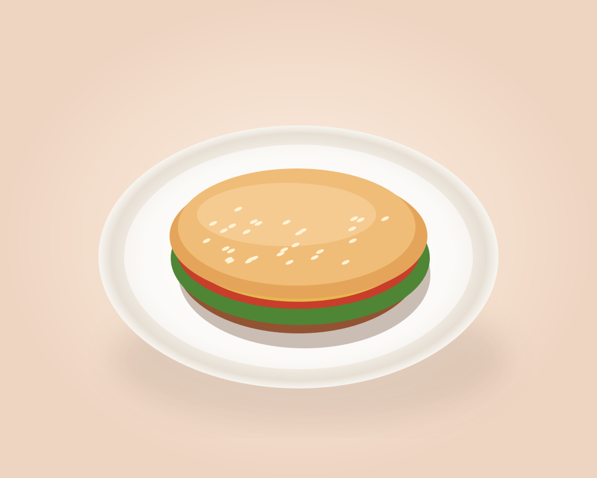

✦ SABOR QUE VOCÊ PODE EXPLORAR
Antes da primeira garfada, uma experiência.
Escolha com os olhos: fotos reais dos pratos e modelos 3D interativos nos itens disponíveis.
360°gire o prato
3Dveja detalhes
ARveja na mesa*
uma nova forma
de escolher
de escolher

Experimente girarToque e arraste o prato
✦ EXPERIÊNCIA IMERSIVA
Veja. Gire. Imagine na sua mesa.
Sem baixar aplicativoUMA EXPERIÊNCIA ALÉM DO CARDÁPIO
Quer ver o prato na sua mesa?
Nos pratos que possuem modelo 3D, abra os detalhes e toque em “Ver na minha mesa”. Em aparelhos compatíveis, a realidade aumentada detecta superfícies para posicionar o modelo no ambiente.